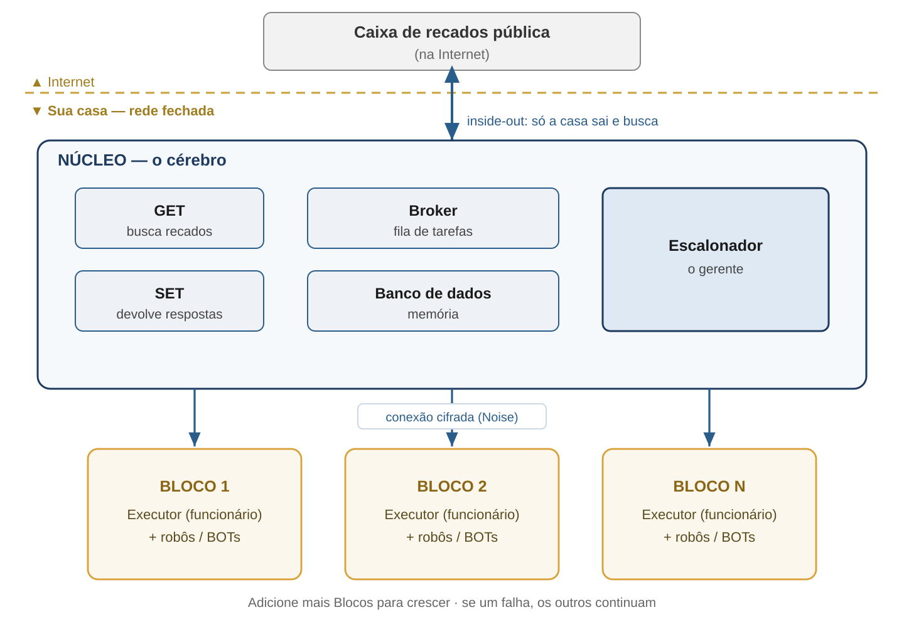
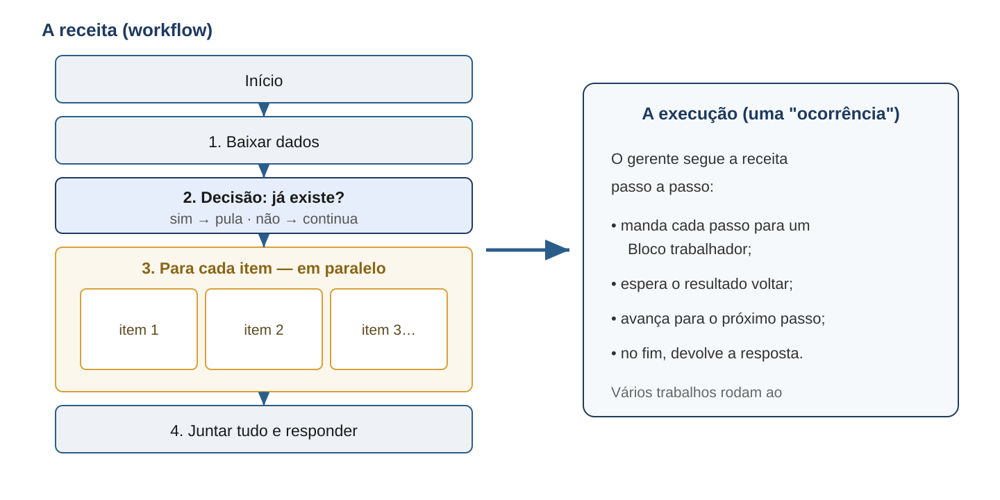

Assistente Pessoal Local — uma plataforma que organiza tarefas e Inteligência Artificial rodando só na sua casa, sem nuvem.
Em uma frase: é um assistente pessoal que mora dentro da sua infraestrutura, faz o trabalho pesado com vários robôs e modelos de IA, e foi desenhado desde o início para ser privado e difícil de invadir — nada da sua vida sai para a internet.
A vida moderna é caótica e cheia de tarefas. Dá para pedir ajuda à tecnologia — mas os assistentes comuns (tipo Alexa ou Siri) mandam tudo que você fala para a nuvem de uma empresa. Você passa a confiar sua rotina, suas senhas e seus hábitos a terceiros. O myass nasce da ideia oposta: ser ajudado sem entregar a própria vida.
Em vez de uma única IA gigante que sabe tudo, o myass orquestra várias rotinas e várias IAs especializadas — cada uma boa em uma coisa — coordenando todas para resolver um problema. Tudo isso roda em equipamentos seus, numa rede fechada. Pense num maestro regendo vários músicos: o maestro não toca tudo, ele coordena quem toca o quê e quando.
O sistema tem duas partes: um Núcleo (o cérebro/maestro, protegido no centro) e vários Blocos (os trabalhadores, que você pode multiplicar).

Analogia: o Núcleo é o escritório central; os Blocos são funcionários. Precisa de mais força? Você contrata mais Blocos. Um funcionário faltou? Os outros continuam — o trabalho não para.
Fica no centro protegido e contém o gerente e a memória do sistema:
| Peça | O que faz, em linguagem humana |
|---|---|
| Escalonador | O gerente. Recebe as tarefas e decide qual funcionário faz o quê, conforme a força de cada um. |
| Broker (fila de tarefas) | O quadro de tarefas. Guarda o que precisa ser feito, organizado por "peso" da tarefa. |
| Banco de dados | A memória. Guarda as tarefas pendentes e o registro do que foi feito. |
| GET / SET | O porteiro que só sai para buscar recados lá fora e levar respostas — nunca deixa ninguém entrar. |
Cada Bloco é uma máquina que faz o trabalho de verdade. Dentro dele há um Executor (o funcionário) e vários robôs/BOTs (as ferramentas e programas dele). Você pode ter quantos Blocos quiser — é assim que o sistema cresce e fica resistente a falhas.
Você monta o que o assistente deve fazer num editor visual, como uma receita de bolo: passo 1, passo 2, "se isso então aquilo", "repita para cada item da lista". Cada passo aponta para um robô que executa aquela parte.

| # | O que acontece |
|---|---|
| 1 | Um pedido chega na "caixa de recados" pública (na internet). |
| 2 | O porteiro GET sai, busca o pedido, descriptografa e coloca na fila. |
| 3 | O Escalonador escolhe um Bloco com força suficiente para a tarefa. |
| 4 | O Executor do Bloco baixa o robô certo, confere que é autêntico e o executa. |
| 5 | O resultado volta; o gerente avança para o próximo passo da receita. |
| 6 | No fim, o porteiro SET leva a resposta de volta para fora. |
Ninguém da internet consegue "bater na porta": o sistema nunca aceita conexões de fora para dentro. É sempre a casa que sai para buscar os recados. Sem porta de entrada, não há porta para arrombar.
Todas as conversas internas são cifradas com criptografia forte e moderna (a mesma família usada por Signal, WireGuard e Tor). E a chave desse código é entregue fisicamente (pen drive / QR), nunca pela internet — então não há como interceptá-la no caminho.
Robôs e máquinas são identificados por uma "impressão digital" matemática do seu conteúdo. Se alguém troca o código de um robô, a impressão digital muda e a fraude é detectada antes de rodar.
Diferente de Alexa e Siri, nenhum dado pessoal sai de casa. O assistente trabalha para você, na sua infraestrutura, sob seu controle.
O myass é um assistente pessoal que organiza tarefas e IAs na sua própria casa: cresce conforme você adiciona trabalhadores, continua funcionando se um falha, e foi desenhado, do começo ao fim, para que a sua vida continue sendo só sua.